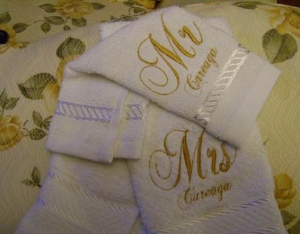
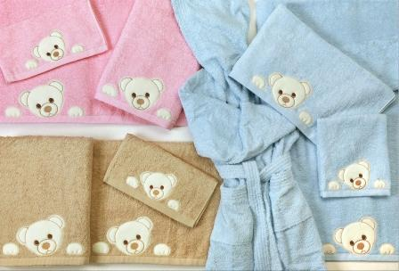
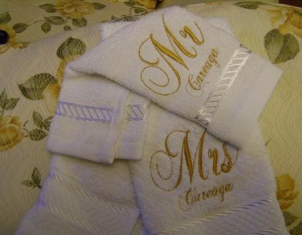
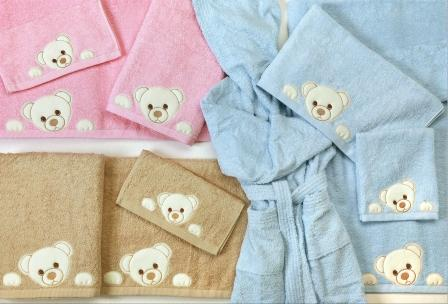

| Mercancía |
Existe |
Costo |
Total |
| SET DE COCINA |
7 |
$100.00 |
$700.00 |
| TOALLA ACUARELA |
3 |
$49.00 |
$147.00 |
| TOALLA BORDADA 1/2 BAÑO |
1 |
$52.90 |
$52.90 |
| TOALLA CENEFA SUPERIOR 1/2 BAÑO |
14 |
$63.OO |
$882.00 |
| TOALLA CENEFA SUPERIOR BAÑO COMPLETO |
14 |
$88.00 |
$1,232.00 |
| TOALLA CENEFA SUPERIOR MANOS |
8 |
$41.00 |
$328.00 |
| TOALLA CON APLICACION 1/2 BAÑO |
3 |
$75.00 |
$225.00 |
| TOALLA ESTUCHE3 EL/ELLA ECONOMICO |
3 |
$54.00 |
$162.00 |
| TOALLA ESTUCHE 3 |
1 |
$110.00 |
$110.00 |
| TOALLA FACIAL |
10 |
$6.00 |
$600.00 |
| TOALLA GRANO DE ORO 1/2 BAÑO |
16 |
$43.00 |
$688.00 |
| TOALLA GRANO DE ORO BAÑO |
14 |
$58.00 |
$812.00 |
| TOALLA GRANO DE ORO MANOS |
9 |
$23.00 |
$207.00 |
| TOALLA JAKARD DEPORTIVA 1/2 BAÑO |
9 |
$66.00 |
$594.00 |
| TOALLA JAKARD MILENIUM 1/2 BAÑO |
8 |
$84.00 |
$672.00 |
| TOALLA POPULAR ESTAMPADA M/B |
6 |
$36.00 |
$216.00 |
| TOALLA PULLMAN JUEGO DE 2 |
6 |
$33.00 |
$198.00 |
| TOALLA REACTIVO PLAYA |
6 |
$63.70 |
$382.20 |
| TOALLA SET NAVIDEÑO |
1 |
$80.00 |
$80.00 |
| TOALLA TRANSFER 1/2 BAÑO |
12 |
$53.00 |
$636.00 |
| TOALLA TRANSFER MANOS |
10 |
$20.00 |
$200.00 |


 


